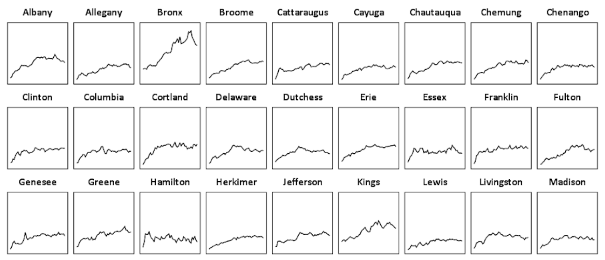
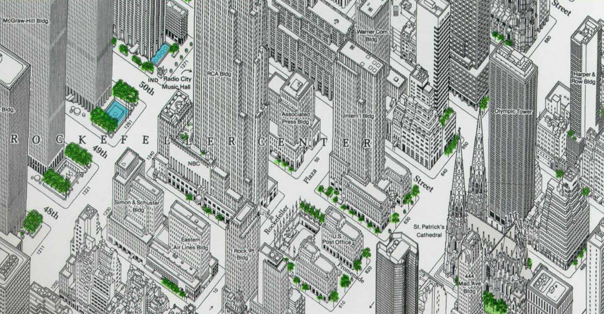
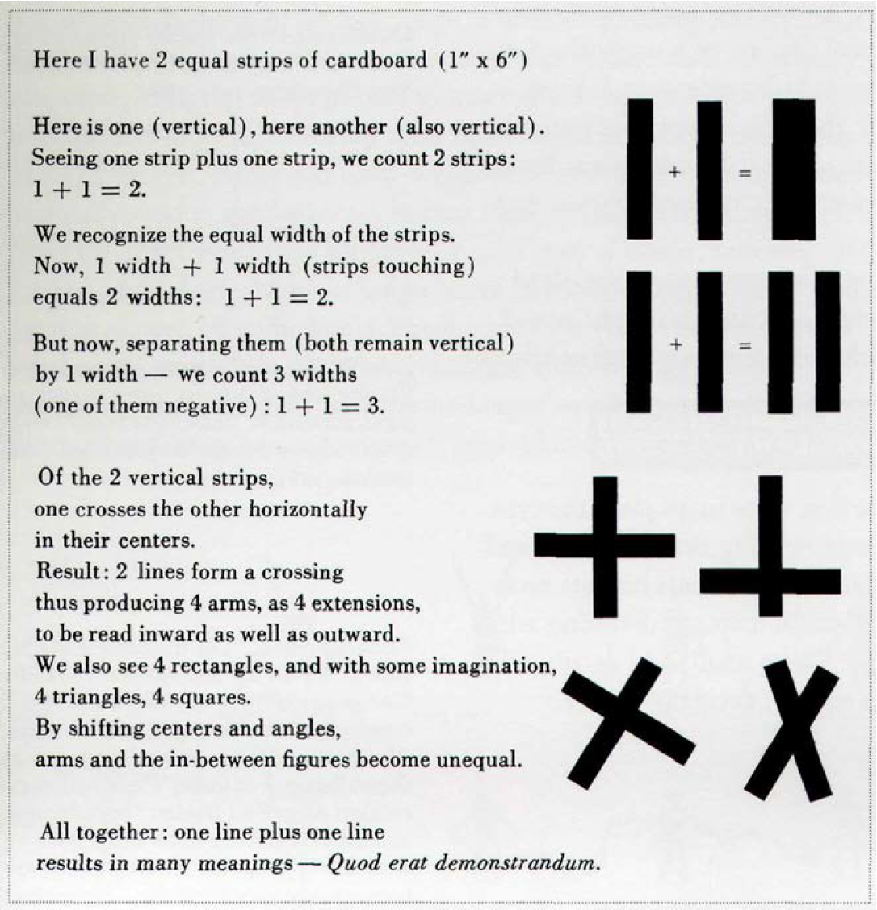
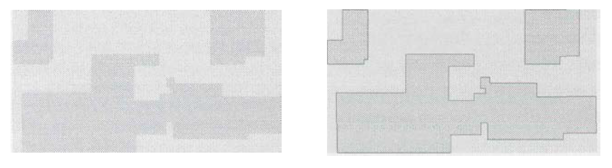

Envisioning Information by Edward Tufte
Thoughts & quotes
Thoughts
This is an enlightening introduction to information visualization, drawing on some seminal works throughout the history of the field. It has a healthy mix of practical advice and analysis of great works, often using a before-and-after to illustrate that practical advice. Some areas are more accessible than others; refer to the end of this page for sections to revisit, since they require a more in-depth reading. Each chapter is dedicated to a specific info-vis technique, which I'll summarize in the following sections.
Small Multiples
A small multiple is a series of similar graphs or charts using the same scale and axes, allowing them to be easily compared. It uses multiple views to show different partitions of a dataset. Their multiplied smallness enforces local comparisons within our eyespan, relying on an active eye to select and make contrasts rather than on bygone memories of images scattered over pages and pages.
Micro/Macro Readings
Micro/Macro design is that which considers both fine detail and the overall conglomerate; it enforces both local and global comparisons and, at the same time, avoids the disruption of context switching.
1 + 1 = 3 or more
Visual activation of negative areas of white space in these exhibits illustrates the endlessly contextual and interactive nature of visual elements. This idea is captured in a fundamental principle of information design: 1 + 1 = 3 or more.
This two-step logic — recognition of 1 + 1 = 3 effects and the consideration that they generate noise — provides a valuable guide for refining and editing designs, for graphical reasoning, and for subtraction of weight.
Quotes
We envision information in order to reason about, communicate, document, and preserve that knowledge — activities nearly always carried out on two-dimensional paper and computer screen. Escaping this flatland and enriching the density of data displays are the essential tasks of information design.
Lurking behind chartjunk is contempt both for information and for the audience. Chartjunk promoters imagine that numbers and details are boring, dull, and tedious, requiring ornament to enliven. Cosmetic decoration, which frequently distorts the data, will never salvage an underlying lack of content.
Micro/macro designs enforce both local and global comparisons and, at the same time, avoid the disruption of context switching. All told, exactly what is needed for reasoning about information
Now and then it is claimed that vacant space is "friendly" (anthropomorphizing an inherently murky idea) but it is not how much empty space there is, but rather how it is used. It is not how much information there is, but rather how effectively it is arranged.
What about confusing clutter? Information overload? Doesn't data have to be "boiled down" and "simplified"? These common questions miss the point, for the quantity of detail is an issue completely separate from the difficulty of reading. Clutter and confusion are failures of design, not attributes of information.
Simpleness is another aesthetic preference, not an information display strategy, not a guide to clarity
The deepest reason for displays that portray complexity and intricacy is that the worlds we seek to understand are complex and intricate. "God is in the details," said Mies van der Rohe, capturing the essential quality of micro/macro performances.
Among the most powerful devices for reducing noise and enriching the content of displays is the technique of layering and separation, visually stratifying various aspects of the data. [But] an omnipresent, yet subtle, design issue is involved: the various elements collected together on flatland interact, creating non-information patterns and texture simply through their combined presence.
[Italo Calvino]: My working method has more often than not involved the subtraction of weight. I have tried to remove weight, sometimes from people, sometimes from heavenly bodies, sometimes from cities; above all I have tried to remove weight from the structure of stories and from language... Maybe I was only then becoming aware of the weight, the inertia, the opacity of the world — qualities that stick to writing from the start, unless one finds some way of evading them.
[Lao Tse]: A vessel is useful only through its emptiness. It is the space opened in a wall that serves as a window. Thus it is the nonexistent in things which makes them serviceable.
The fundamental uses of color in information design: to label (color as noun), to measure (color as quantity), to represent or imitate reality (color as representation), and to enliven or decorate (color as beauty)
Transparent and effective deployment of redundant signals requires, first, the need — an ambiguity or confusion in seeing a data display that can in fact be diminished by multiplicity — and, second, the appropriate choice of design technique (from among all the various methods of signal reinforcement) that will work to minimize the ambiguity of reading.
Further Reading